Hata, from the Ukrainian “хата”: home
A home server in a single file.
A web dashboard, a Docker app store, files, HTTPS and backups. It turns an old PC, a mini PC or a Raspberry Pi into a home server you run from a browser.
curl -fsSL https://raw.githubusercontent.com/sanyadez/hata/main/install.sh | sudo shOne command to install, then everything is in the browser. Linux with systemd, x86_64 or arm64. Early development.
See the code on GitHub ↗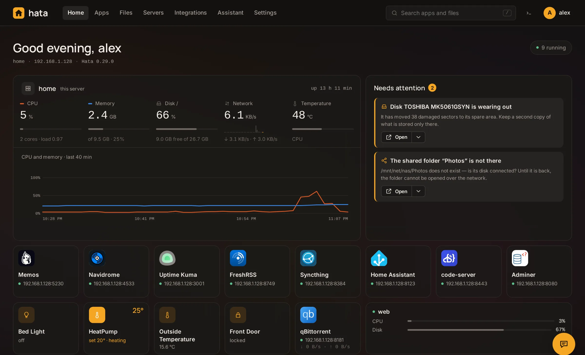
What it does
Apps, and the rest of what a home server needs
Apps
Pick one in the store, Jellyfin, Nextcloud, Home Assistant, Pi-hole and well over a hundred more, press Install, and it runs in Docker. Or paste any compose file.

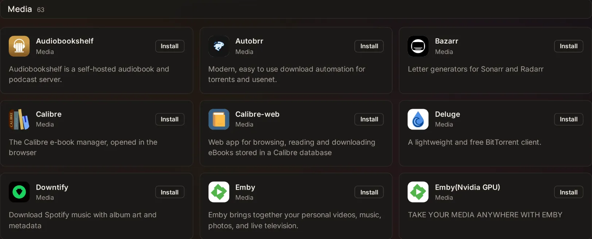

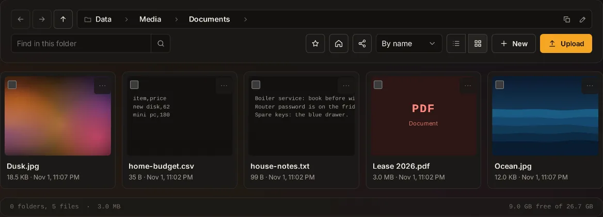
Files and shared folders
A file manager in the browser, and folders shared over the network.

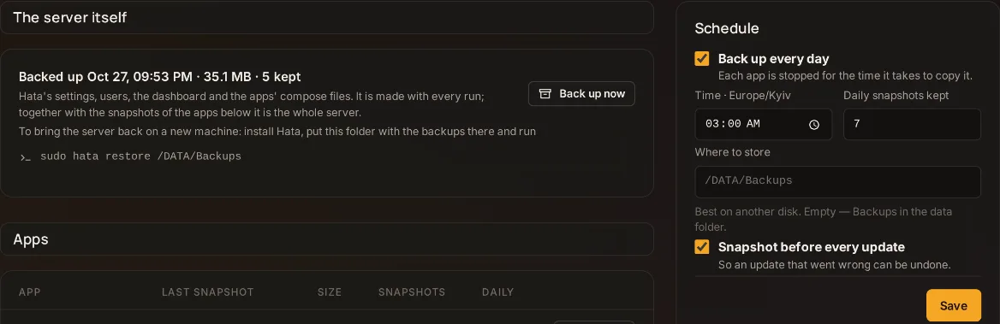
Backups
Restore a whole app or single files. Keep a second copy somewhere else, and a snapshot before every update can undo one that went wrong.

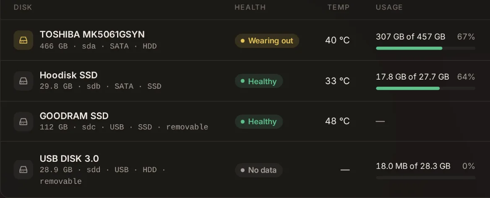
Disks and their protection
Each disk’s health and what fills it. One disk can hold parity for the others, so what a dead disk held is computed back.

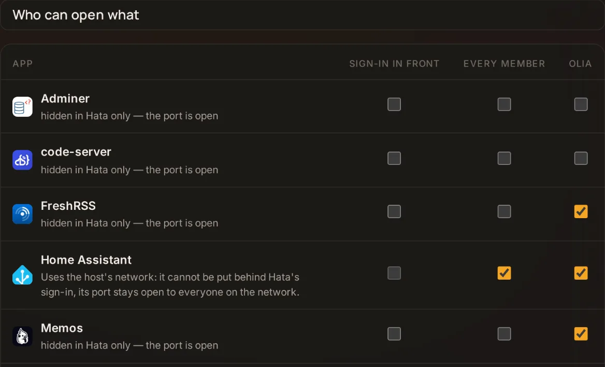
Users and access
Family members open their apps and nothing else. Invitations by link, two-factor sign-in, passkeys.
An assistant that asks first
Ask in your own words why an app is down or what fills the disk. It looks at once, and every change waits for your “Run”. The model is yours to name: the API of a provider you have a key for, or one on your own machine. Agents connect over MCP, with a key of one of three levels.

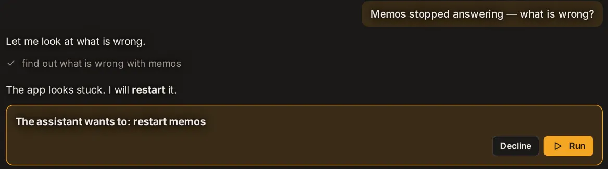
Network
Interfaces and addresses, Wi-Fi, a USB modem as a spare way to the internet, an access point. If a new address cuts the server off, the previous one comes back by itself.
Names and HTTPS
hata.local and a name for every app, with nothing to set up on phones or the router. HTTPS through your own proxy, or from Let’s Encrypt by Hata itself.
More than one computer
It looks after the rest of the house too
Other computers connect through a small client, with no port to open. Everything sits in one tree.
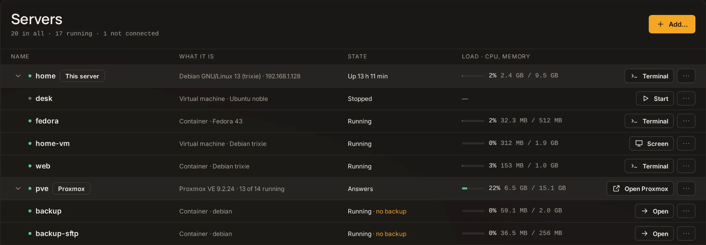
Servers: everything in one tree.

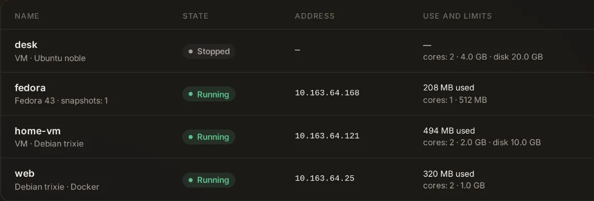
Containers and virtual machines
Made on the server itself, with their limits and the place they live in. Virtual machines are a test feature.

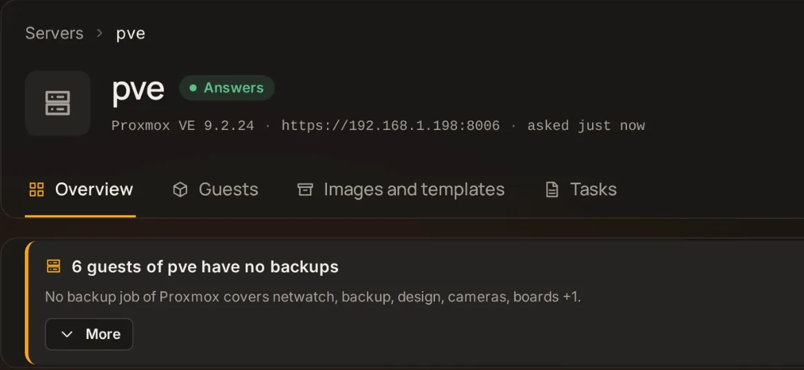
Proxmox VE
The guests of a Proxmox server: power, snapshots, backups, and what needs attention.

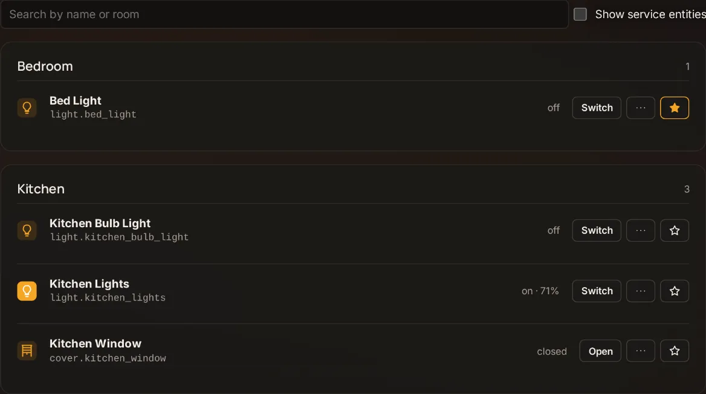
Integrations
Services you already run: the devices of Home Assistant, the torrents of qBittorrent, the cameras of Frigate, right on the home page. Nothing is installed in them.

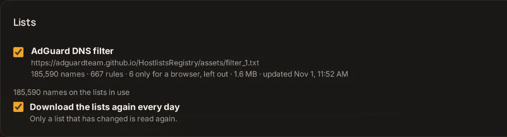
DNS with ad blocking
Off until you turn it on. It answers the names of the home, blocks by the lists you choose and works on TVs and apps, where no browser extension reaches.
Why it is built this way
Nothing you cannot see or take away
One file
One process, one binary, no microservices, no database server next to it. Not an operating system: installed on the Linux you already have, and removed just as easily.
No dependencies
Built on Bun, with no npm packages.
An app is a compose file
A plain file on disk that runs without Hata too. Edit it as text or as a form.
Docker is not hidden
Live logs, a shell in a container, images and volumes with their size. What already runs on the machine can be taken in as apps.

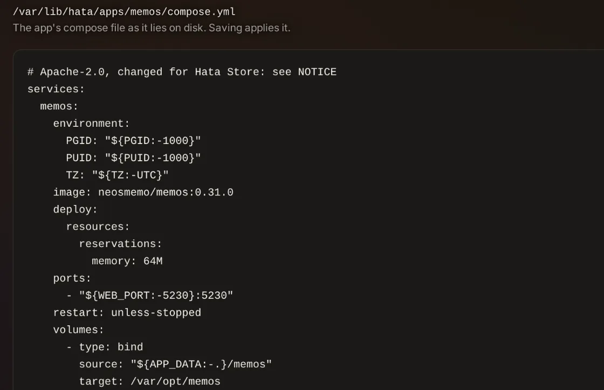
Get started
Three steps, from a browser after the first
Run the command
It downloads the binary of the latest release, checks it against the checksums, installs Docker if it is missing and starts the service.
Create the administrator
The script ends by printing the address. There are no default credentials, and the setup needs a code only the server’s console shows.
Pick the first apps
The first run walks through the server’s name, what already runs, where data and backups go, and a few apps to start with.
curl -fsSL https://raw.githubusercontent.com/sanyadez/hata/main/install.sh | sudo shYou need a Linux machine with systemd, x86_64 or arm64. Docker comes with the script if it is missing.